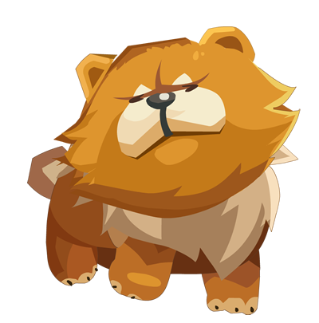
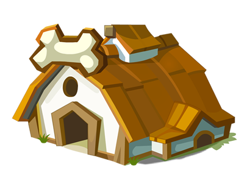
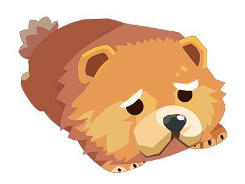
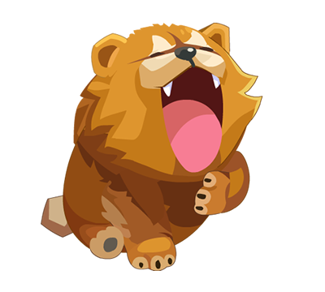
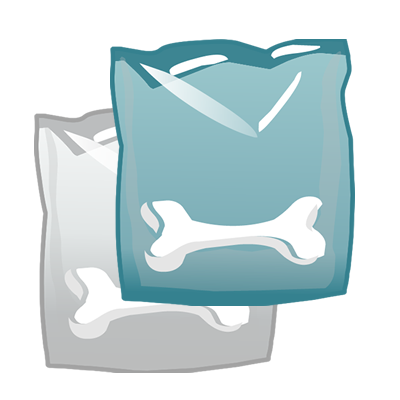
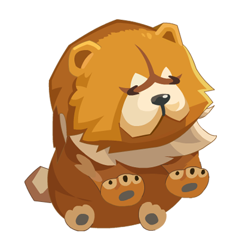

果实介绍

宠物获取
宠物上线后，玩家通过登录可以获得宠物大礼包。领取礼包后，获得宠物“狗狗”一只，普通狗粮10袋。通过点击宠物，可以观察宠物信息，技能。宠物默认昵称均为“松狮”，通过点击改名，可以给自己的宠物取一个喜爱的昵称。如果您不满意系统赠送您的宠物，可以在商店使用钻石进行购买。售价为：1000钻石。（活动打折，以活动期间价格为准）
温馨提示：目前改名功能只能使用一次。
宠物上线后，玩家通过登录可以获得宠物大礼包。领取礼包后，获得宠物“狗狗”一只，普通狗粮10袋。通过点击宠物，可以观察宠物信息，技能。宠物默认昵称均为“松狮”，通过点击改名，可以给自己的宠物取一个喜爱的昵称。如果您不满意系统赠送您的宠物，可以在商店使用钻石进行购买。售价为：1000钻石。（活动打折，以活动期间价格为准）
温馨提示：目前改名功能只能使用一次。

宠物房屋
在商店购买的宠物，均放置在宠物房屋内。可以通过点击宠物房屋进行查看宠物信息，宠物房屋最多只能装下3只宠物。超过3只将无法进行购买。
在商店购买的宠物，均放置在宠物房屋内。可以通过点击宠物房屋进行查看宠物信息，宠物房屋最多只能装下3只宠物。超过3只将无法进行购买。

宠物等级
初始宠物均为1级，通过喂食“普通”或“优质”狗粮可以提升狗狗经验，体力。当宠物经验槽满后可以自行选择提升等级。升级后，宠物的各项属性均得到大幅度提升。
温馨提示：宠物等级小于玩家2级。例：玩家农场等级为8级，则宠物等级只能到6级。
初始宠物均为1级，通过喂食“普通”或“优质”狗粮可以提升狗狗经验，体力。当宠物经验槽满后可以自行选择提升等级。升级后，宠物的各项属性均得到大幅度提升。
温馨提示：宠物等级小于玩家2级。例：玩家农场等级为8级，则宠物等级只能到6级。

宠物训练
如果你不满意当前狗狗的属性，还可以通过训练来提升狗狗的属性值（攻击，防御，速度，幸运，生命）。
温馨提示：训练宠物会消耗当前宠物的体力，当体力不足时，无法训练。
如果你不满意当前狗狗的属性，还可以通过训练来提升狗狗的属性值（攻击，防御，速度，幸运，生命）。
温馨提示：训练宠物会消耗当前宠物的体力，当体力不足时，无法训练。

宠物喂食
喂养宠物可以选择每次喂食狗粮的品种，通过点击狗粮图标实现切换每次喂食狗粮的品种。已达到高效喂养宠物的目的。目前可以切换品种为“普通狗粮”，“优质狗粮”2种。
喂养宠物可以选择每次喂食狗粮的品种，通过点击狗粮图标实现切换每次喂食狗粮的品种。已达到高效喂养宠物的目的。目前可以切换品种为“普通狗粮”，“优质狗粮”2种。

宠物技能
技能1：“自动收获”通过点击使用后，宠物帮您实现整个收获过程。技能时效随宠物等级提升而增加
温馨提示：该技能24小时只能使用1次，当天结束后，次日可以再次开启。
技能2：“自动播种”通过点击使用后，宠物帮您实现铲除，播种过程。技能时效随宠物等级提升而增加
温馨提示：该技能24小时只能使用1次，当天结束后，次日可以再次开启。铲除时在拥有锄头的玩家会附带锄头效果
技能3：“玫瑰之心”通过给宠物喂食“普通”或“优质”狗粮，随机给该技能增加经验值，当经验值满1000后，可以使用该技能。使用后获得 “玫瑰之心”道具1个。
温馨提示：该技能经验值满后不累计，堆叠。请注意经验值进度，及时使用，避免浪费。
技能1：“自动收获”通过点击使用后，宠物帮您实现整个收获过程。技能时效随宠物等级提升而增加
温馨提示：该技能24小时只能使用1次，当天结束后，次日可以再次开启。
技能2：“自动播种”通过点击使用后，宠物帮您实现铲除，播种过程。技能时效随宠物等级提升而增加
温馨提示：该技能24小时只能使用1次，当天结束后，次日可以再次开启。铲除时在拥有锄头的玩家会附带锄头效果
技能3：“玫瑰之心”通过给宠物喂食“普通”或“优质”狗粮，随机给该技能增加经验值，当经验值满1000后，可以使用该技能。使用后获得 “玫瑰之心”道具1个。
温馨提示：该技能经验值满后不累计，堆叠。请注意经验值进度，及时使用，避免浪费。
宠物属性知识
宠物总评分：宠物各项数据的综合表现，仅做参考。并不能作为宠物在某种实用功能上的评判
经验：宠物提升等级的唯一依据。
体力（生命）：宠物战斗胜负的判定，发挥当前属性 “幸运”效果的依据。
温馨提示：当体力值为“0”时，所有技能失效。宠物会伴随时间产生饥饿，从而扣除对应的生命值。当发挥属性“幸运”效果时，收获作物也会随机扣除一定的生命值。
攻击：宠物的伤害值大小的依据
防御：宠物抵抗伤害值的依据
速度：宠物战斗（赛跑）时，作为攻击快慢（赛跑胜负）的判定。
幸运：发挥宠物最大攻击的几率，提升当前农场高级作物出现的概率
宠物总评分：宠物各项数据的综合表现，仅做参考。并不能作为宠物在某种实用功能上的评判
经验：宠物提升等级的唯一依据。
体力（生命）：宠物战斗胜负的判定，发挥当前属性 “幸运”效果的依据。
温馨提示：当体力值为“0”时，所有技能失效。宠物会伴随时间产生饥饿，从而扣除对应的生命值。当发挥属性“幸运”效果时，收获作物也会随机扣除一定的生命值。
攻击：宠物的伤害值大小的依据
防御：宠物抵抗伤害值的依据
速度：宠物战斗（赛跑）时，作为攻击快慢（赛跑胜负）的判定。
幸运：发挥宠物最大攻击的几率，提升当前农场高级作物出现的概率
宠物相关知识
普通狗粮：喂养宠物增加1点经验，同时增加体力10点。（营养价值一般的食物）
优质狗粮：喂养宠物增加1点经验，同时增加体力10点。（营养价值均衡的食物）
道具“玫瑰之心”： 玫瑰之心道具只能在金土地，且在种子期使用。使用后，该种子成长的作物100%为玫瑰，数量为1朵，丰收不受灾害影响。
普通狗粮：喂养宠物增加1点经验，同时增加体力10点。（营养价值一般的食物）
优质狗粮：喂养宠物增加1点经验，同时增加体力10点。（营养价值均衡的食物）
道具“玫瑰之心”： 玫瑰之心道具只能在金土地，且在种子期使用。使用后，该种子成长的作物100%为玫瑰，数量为1朵，丰收不受灾害影响。